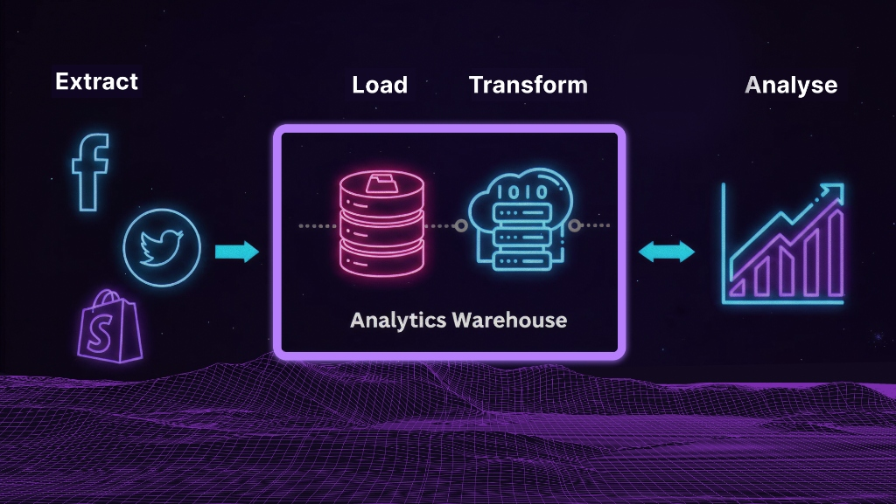

I built a Python-based ETL pipeline to process millions of sales records into a BigQuery Data Warehouse. This analysis highlights the translation of that raw data into actionable business strategy, identifying critical bottlenecks in payment gateways and dormant user activation.
A fast-growing technology retail chain - selling through both Shopify storefronts and direct online order systems - had no unified view of its own business.
Every month, analysts had to manually pull data from multiple sources, reconcile mismatched IDs, and stitch together reports in spreadsheets.
I prioritised getting the data architecture right first - so any downstream tool could plug in reliably.
MERGE calculates and updates each customer's RFM segment.
During the ETL phase, a comprehensive audit revealed structural anomalies in the web tracking data, making standard behavioral models (like end-to-end Funnels) mathematically unreliable.
To maintain the integrity of our BI solution, I pivoted the analytical strategy to focus exclusively on verified transactional data from the Star Schema. The resulting dashboards prioritize actionable, high-confidence insights: RFM Customer Segmentation, Net Cashflow Trends, and Payment Gateway Performance.
While top-line revenue often steals the spotlight in e-commerce, true business health lies in the conversion funnel, cash flow realization, and customer retention. Through a deep analysis of our e-commerce dashboard, we identified a critical bottleneck: a severe disconnect between recognized sales revenue and actual cash-in-bank, driven largely by payment gateway failures.
By pivoting our focus from merely driving traffic to optimizing the payment experience and activating dormant accounts, we uncovered millions in easily recoverable revenue.
The Observation:
At first glance, the top-line metrics look phenomenal: 18T VND in Total Sales Revenue. However, a closer look at the cash flow reveals a massive liquidity gap, with Total Bank Inflow sitting at only 1T VND.
The Root Cause:
The disparity is heavily driven by a staggering 43.82% Failed Payment Rate. When breaking down the payments by gateway, we found the culprits:
The Business Impact:
The company is aggressively acquiring customers and securing orders, but the checkout infrastructure is hemorrhaging cash at the finish line, resulting in massive outstanding debt, with a terrifyingly large portion aging past 60 days.
The Observation:
Using a decomposition tree to analyze the outstanding debt, a counterintuitive and alarming trend emerged: "VIP / Best Customers" hold the largest share of total outstanding debt (~36.9T VND).
The Insight:
Our most loyal, high-value customers are attempting to place massive orders but are failing to complete the payment cycle. This is likely due to:
This means we aren't just losing random sales; we are frustrating our most valuable demographic at the most critical moment of the customer journey.
The Observation:
Out of ~100,000 total registered customers, only 29,630 are classified as active.
The Insight:
There are ~70,370 registered accounts with zero transaction history—accounting for roughly 70% of the entire user base. These are high-intent users who took the time to create an account but never made it past the consideration phase.
Furthermore, analyzing the time-of-day purchasing behavior reveals clear peaks late at night (8:00 PM - 10:00 PM) and early morning, providing a precise window for targeted interventions.
To transition from passive reporting to active growth, I recommend the following immediate business interventions based on the data:
Data without action is just overhead. By identifying the payment gateway bottlenecks and the untapped potential of dormant accounts, this analysis shifts the organizational focus from generating demand to successfully capturing it. Fixing the 43% payment failure rate alone represents a multi-billion VND growth lever that requires zero additional marketing spend.
For a deep dive into the code structure, data schema, and setup instructions, visit the GitHub repository.
View on GitHub →